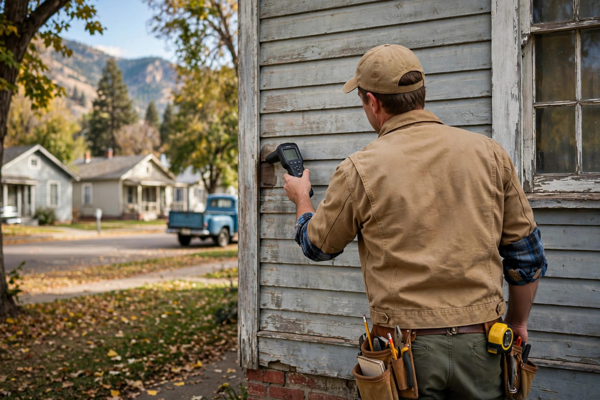

Mold Inspection in Caldwell, Done Right
A careful walk-through of your home with moisture mapping and clear answers — not guesswork. You get findings you can act on, in plain language.

Questions, answered plainly
How long does a mold inspection take in Caldwell?
Most single-family homes take 60 to 90 minutes. Larger homes or ones with crawl spaces and basements can run closer to two hours, since every moisture-prone area gets checked individually.
Will I get a written report?
Yes. You receive a written summary with photos, moisture readings, and plain-language findings — usually within one business day of the visit.
Do you test the air or just look around?
The inspection is primarily visual plus moisture mapping. Air or surface sampling is available when the situation calls for it, such as a real-estate transaction or a medical provider's request, and we explain beforehand what each sample can and cannot tell you.
My house is near Indian Creek. Does that matter?
It can. Homes close to the creek or in low-lying parts of Caldwell sometimes deal with higher soil moisture and seasonal dampness in basements and crawl spaces. We pay extra attention to those areas.
Should I be home during the inspection?
It helps. Walking through with the inspector means you see exactly what we see and can ask questions on the spot, rather than reading about it later.
What we look at in Caldwell homes
Older housing stock means specific trouble spots. These are the places we check first.
Crawl spaces and basements
Many Caldwell homes from the mid-1900s have vented crawl spaces or partial basements. Ground moisture rises through both, especially after wet springs along Indian Creek.
Bathrooms without proper venting
Older bathrooms often vent into the attic rather than outside. Years of shower steam condenses on cold sheathing and feeds hidden growth.
Around old plumbing
Galvanized supply lines common in Caldwell's older neighborhoods corrode from the inside. Slow seepage behind walls can go unnoticed for months.
What the inspection covers
Moisture mapping
Pin and pinless meters trace dampness through walls, floors, and ceilings so we find the source, not just the stain.
Photo documentation
Every finding is photographed and marked on a simple floor sketch, so the report reads clearly even weeks later.
Ventilation review
Bath fans, dryer vents, and attic airflow get checked — poor ventilation is behind a surprising share of Caldwell mold calls.
Plain-language findings
No jargon, no scare tactics. You learn what was found, where the moisture comes from, and what your options are.
A renter near the College of Idaho notices a musty smell in a ground-floor bedroom every fall. The inspection finds the bedroom's exterior wall stays damp because a downspout dumps roof water right against the foundation. The fix is grading and a downspout extension — a drainage issue, not a mold disaster.
Sources: EPA — Mold, Moisture & Your Home · CDC — Mold
Why inspect before you worry
A professional look settles the question fast — and often the answer is simpler than feared.
- Confirm whether it is actually mold or just staining
- Find the moisture source so it does not come back
- Get documentation useful for landlords, buyers, or sellers
Wondering about a smell or a stain?
One call sets up an inspection at a time that works for you. Fast report, straight answers.
Open 24 hours · Serving Caldwell and Canyon County
After the inspection: what comes next
If nothing significant is found
You get peace of mind in writing, plus any minor moisture concerns to watch so small issues stay small.
If remediation is recommended
The report becomes your scope of work — what needs removal, what needs drying, and what caused it.
For buyers and sellers
Reports carry weight in negotiations. We keep findings factual and photo-documented.
For landlords and tenants
A neutral third-party report settles most disputes about responsibility. Moisture source determines the fix, and the report names the source plainly.